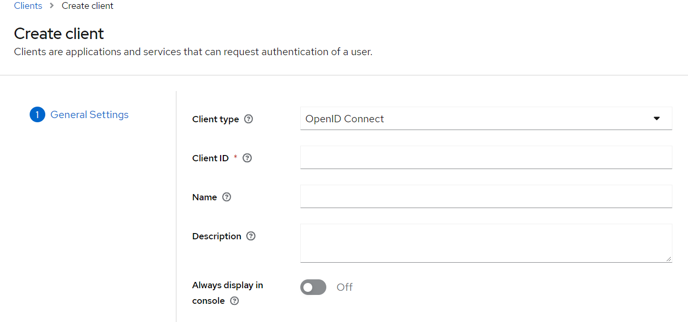

Keycloak is an open source identity and access management solution. 他能提供 SSO 系統服務，一個簡單的驗證機制可以快速被建立出來，更多資訊可以到官網上閱讀，那為什麼要寫這篇筆記，主要是想要瞭解開發時，如何與 Keycloak 串接，所以要在本機上面將該環境給準備出來，以供開發使用。
環境架設
好家在的是在本機電腦上面啟動一套 Keycloak 的動作很簡單，拜 container 技術的進步，只要一行指令就可以完成安裝
1 | docker run -p 8080:8080 -e KEYCLOAK_ADMIN=admin -e KEYCLOAK_ADMIN_PASSWORD=admin quay.io/keycloak/keycloak:19.0.3 start-dev |
- 登入帳號密碼預設為
admin/admin - 登入網址:
http://localhost:8080
Keycloak 後台基本操作
開啟 http://localhost:8080 會看到這個畫面
進入 Administration Console 會先看到登入畫面，帳號密碼如上面說到的 admin / admin，登入帳後密碼後會看到一堆設定選單，我們的主要目的是要測試開發時能串接 Keycloak 的登入功能，所以會做以下幾件事情
建立 realm
於左上角的下拉選單中，可以看到 Crate Realm，從這邊進行建立 realm 的動作
什麼是 realm ? realm 是一個 workspace 讓你可以管理 users、applications、roles and groups.
輸入一個名字後按下 Create 即可完成建立，建立完成後在左上角的下拉選單中就可以看到剛剛所建立的 realm
建立 User
切換到剛剛所新增的 realm ，然後點選 Users 來準備建立第一個 User 帳號
點 Create new user 後，輸入一些基本資訊，按下 Create 完成新增第一個使用者
新增完成後，需要來設定一下登入密碼，在畫面上設定密碼的地方在

Temporary：使用者於第一次登入時是否要重新設定密碼，預設是On表示使用者在第一次登入後是需要變更密碼的
驗證剛剛設定的 User 是否能正常使用，可以透過開啟 Keycloak Account Console 的畫面來進行驗證，如果能正確的登入就代表設定正確
開發 & 串接
上述完成後就可以來試著串看看了，當然首發是 Angular
設定 Client (on Keycloak)
我覺得這塊是最困惑的地方，一個地方沒設定好，前端就沒法正常使用了
-
建立 clients
-
設定 Client ID，之後在 Angular 設定時需要

-
Capability Config的頁面先保持預設值 -
Save完成新增 Client -
這時候會跳到 Client 的詳細頁面，這個頁面需要多設定一些網址資訊
- Valid redirect URIs 新增
http://localhost:4200/* - Valid post logout redirect URIs 新增
http://localhost:4200/* - Web origins 新增
http://localhost:4200
設定完成後按下
Save儲存異動 - Valid redirect URIs 新增
Angular 安裝 Keycloack library
-
假設已經有一個 Angular 專案
-
安裝 library
1
npm install keycloak-angular keycloak-js
-
設定 initial config (
app.mdoule.ts)1
2
3
4
5
6
7
8
9
10
11
12
13
14
15
16
17
18
19
20
21
22
23
24
25
26
27
28
29
30
31
32
33
34
35
36
37
38import { APP_INITIALIZER, NgModule } from '@angular/core';
import { BrowserModule } from '@angular/platform-browser';
import { RouterModule } from '@angular/router';
import { KeycloakAngularModule, KeycloakService } from 'keycloak-angular';
import { AppComponent } from './app.component';
function initializeKeycloak(keycloak: KeycloakService) {
return () =>
keycloak.init({
config: {
url: 'http://localhost:8080',
realm: 'myrealm',
clientId: 'ngclient',
},
loadUserProfileAtStartUp: false,
initOptions: {
onLoad: 'check-sso',
silentCheckSsoRedirectUri:
window.location.origin + '/assets/silent-check-sso.html',
},
});
}
({
declarations: [AppComponent],
imports: [BrowserModule, KeycloakAngularModule, RouterModule.forRoot([])],
providers: [
{
provide: APP_INITIALIZER,
useFactory: initializeKeycloak,
multi: true,
deps: [KeycloakService],
},
],
bootstrap: [AppComponent],
})
export class AppModule {}-
line 12: Keycloak server 位置
-
line 13: 要存取哪一個
realm -
line 14: 使用的 ClientID
-
line 20:
slient-check-sso.html的內容是1
2
3
4
5
6
7<html>
<body>
<script>
parent.postMessage(location.href, location.origin);
</script>
</body>
</html> -
line 16 ~ 21: 其他關於驗證的設定項目
當上述設定完成後，基本上整個 angular application 已經跟 keycloak 做好連接了
以下有一個簡單的範例，用來展示 login 前後的操作
-
app.component.html1
2
3
4
5
6
7
8
9
10
11
12
13
14
15
16
17
18
19
20
21
22
23
24
25
26
27
28
29
30<h1>Keycloak Angular Example</h1>
<button *ngIf="isLoggedIn" type="button" (click)="logout()">Log out</button>
<button *ngIf="!isLoggedIn" type="button" (click)="login()">Log in</button>
<ng-container *ngIf="userProfile">
<h2>User information</h2>
<table>
<tr *ngIf="userProfile.username">
<th scope="row">Username</th>
<td>{{ userProfile.username }}</td>
</tr>
<tr *ngIf="userProfile.firstName">
<th scope="row">First name</th>
<td>{{ userProfile.firstName }}</td>
</tr>
<tr *ngIf="userProfile.lastName">
<th scope="row">Last name</th>
<td>{{ userProfile.lastName }}</td>
</tr>
<tr *ngIf="userProfile.email">
<th scope="row">E-mail</th>
<td>{{ userProfile.email }}</td>
</tr>
<tr>
<th scope="row">E-mail verified</th>
<td>{{ userProfile.emailVerified ? 'Yes' : 'No' }}</td>
</tr>
</table>
</ng-container> -
app.component.ts1
2
3
4
5
6
7
8
9
10
11
12
13
14
15
16
17
18
19
20
21
22
23
24
25
26
27
28
29
30
31
32import { Component } from '@angular/core';
import { ActivatedRoute, Router } from '@angular/router';
import { KeycloakService } from 'keycloak-angular';
import { KeycloakProfile } from 'keycloak-js';
({
selector: 'app-root',
templateUrl: './app.component.html',
styleUrls: ['./app.component.css'],
})
export class AppComponent {
public isLoggedIn = false;
public userProfile: KeycloakProfile | null = null;
constructor(private readonly keycloak: KeycloakService) {}
public async ngOnInit() {
this.isLoggedIn = await this.keycloak.isLoggedIn();
if (this.isLoggedIn) {
this.userProfile = await this.keycloak.loadUserProfile();
}
}
public login() {
this.keycloak.login();
}
public logout() {
this.keycloak.logout();
}
}
呈現畫面
-
而 login 後的 User 資訊到底可以取到什麼程度，也是可以從後台做設定的
AuthGuide & HttpInterceptor
所安裝的套件也好心的將這兩區塊的功能，範例程式碼都提供出來了，這裡就不多寫，直接附上連結
心得
Keycloak 的設定很多，很多細節需要仔細的研究，但總的來說，功能很強也保有一定的彈性，例如 User Info Storage 的部分可以串接其他的資訊，或是支援其他的 Identity providers 等，開發上的使用也支援很多常見語言，例如 Java、.NET、JavaScript 、Python 等